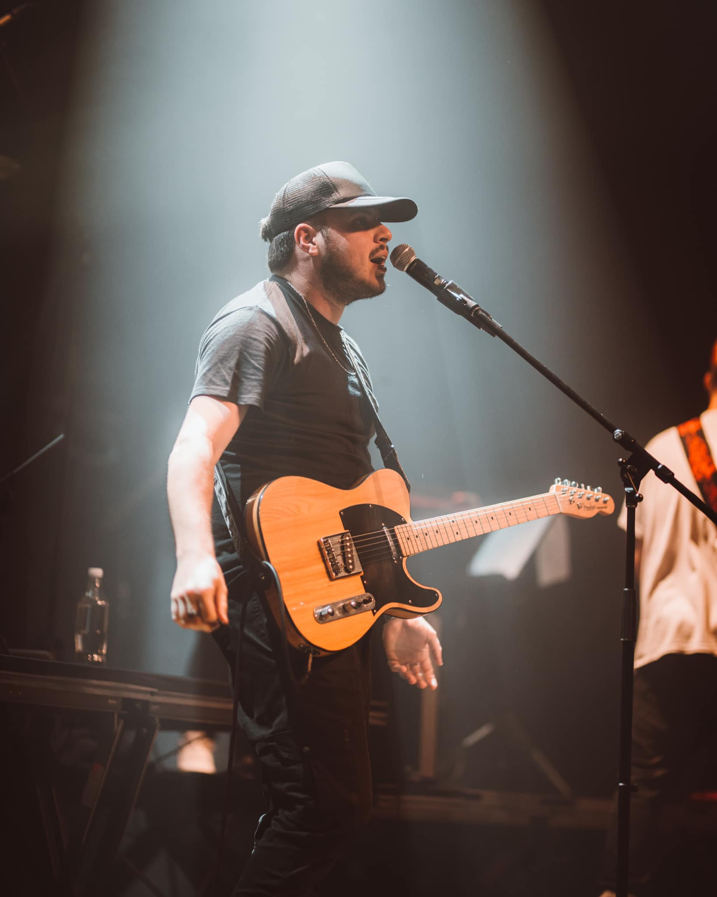
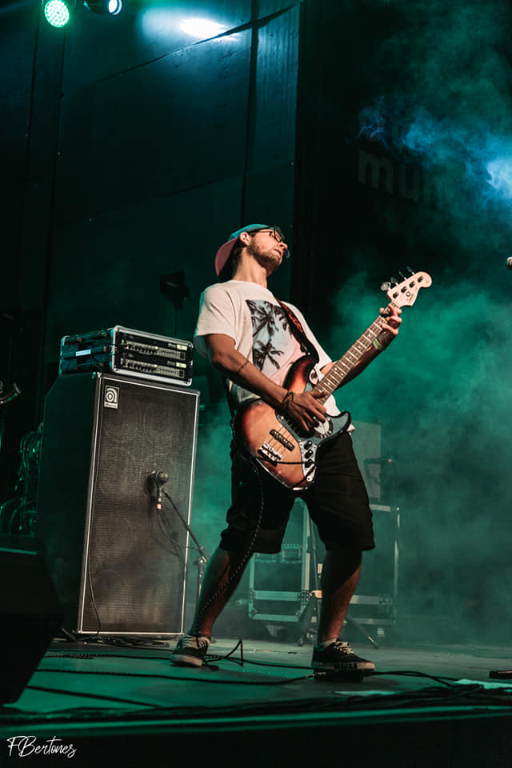
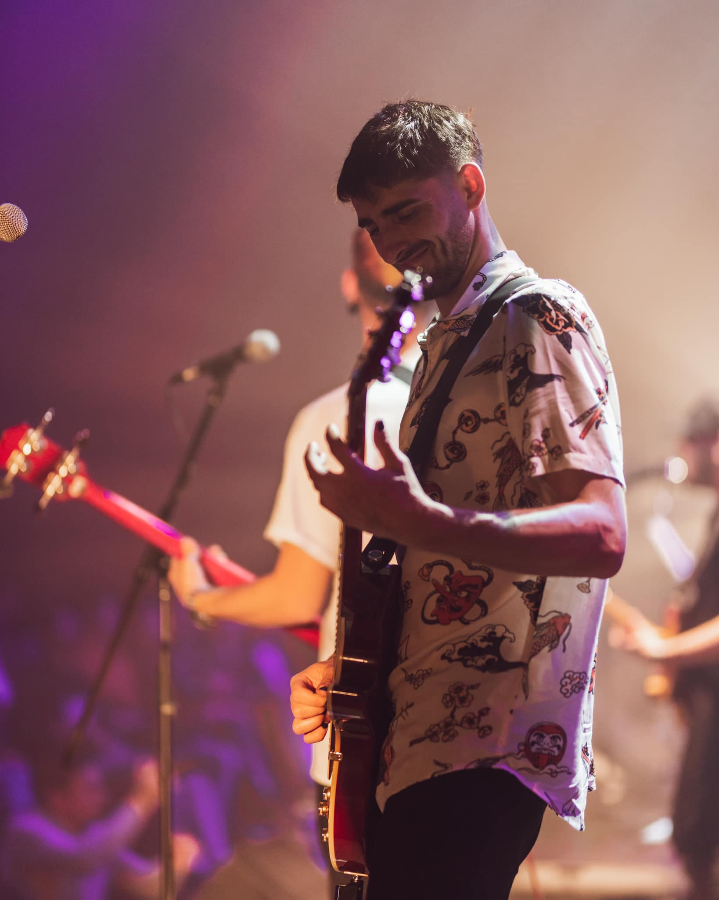
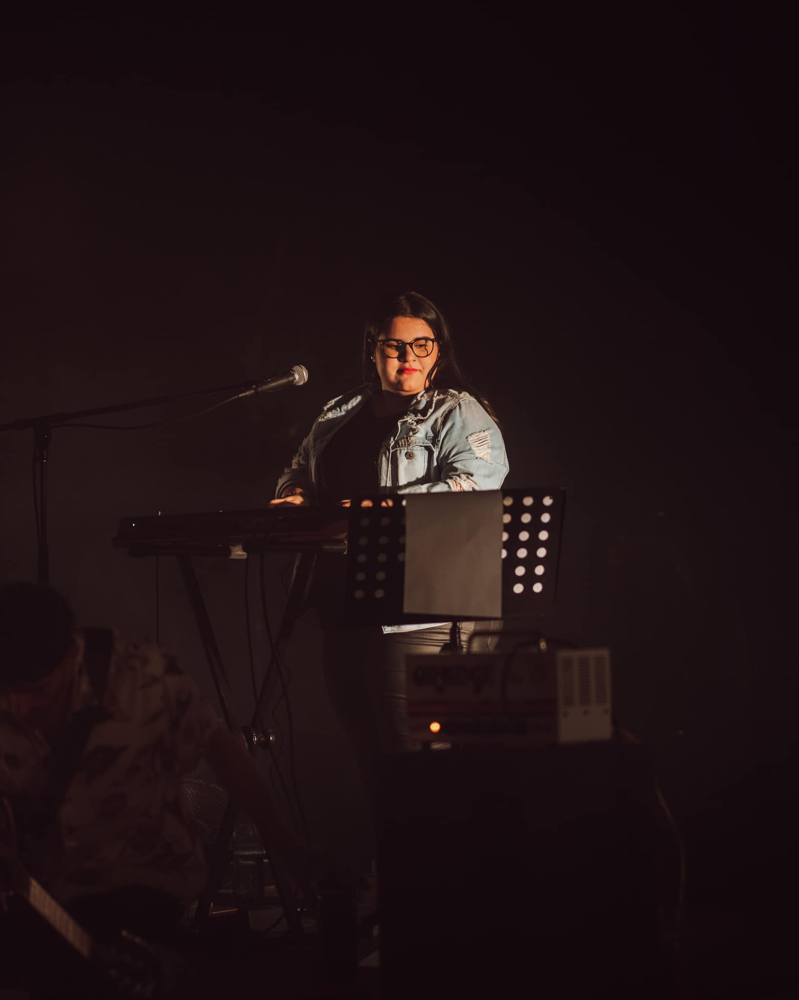
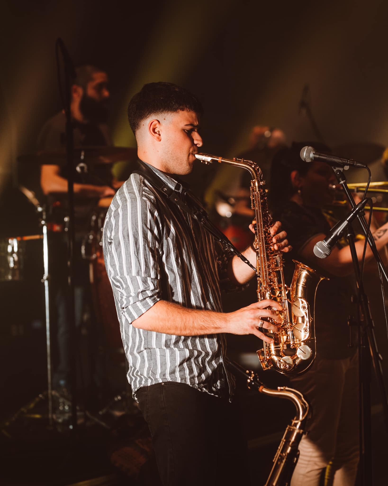
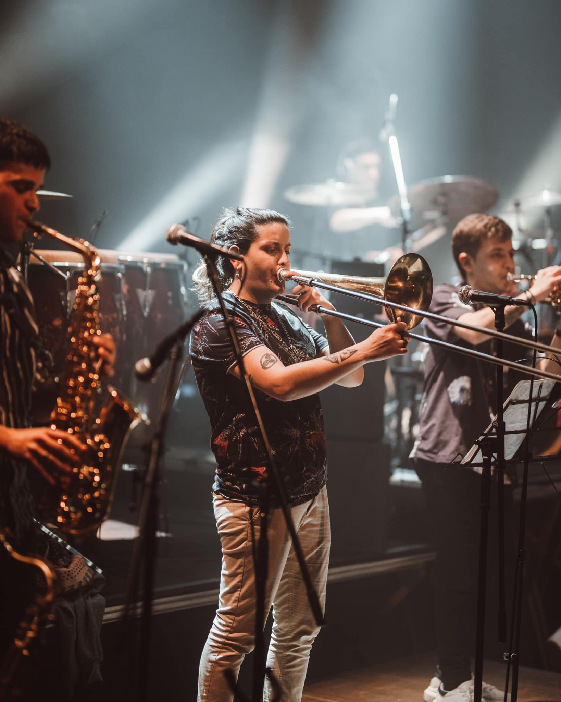
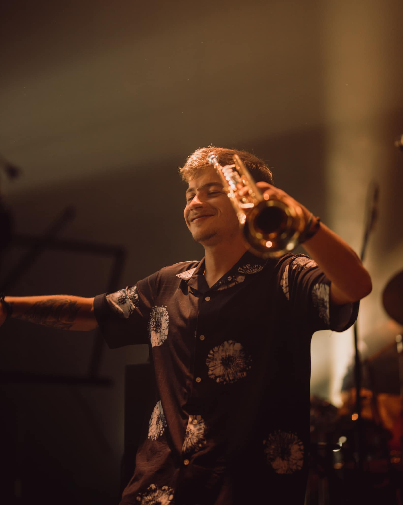
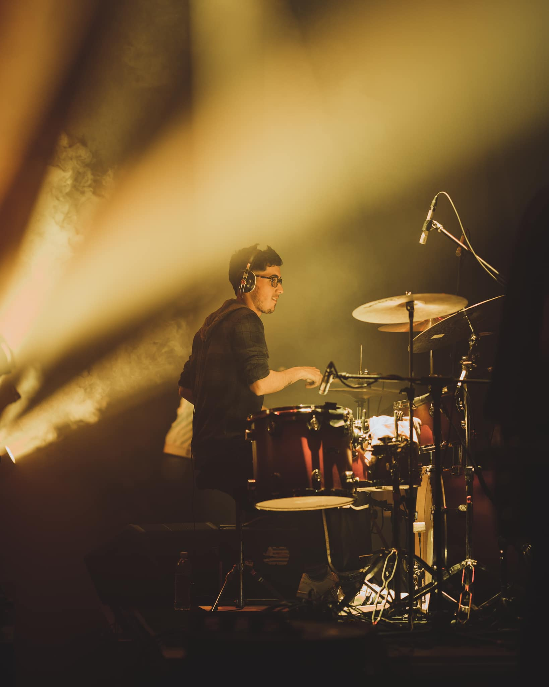

BIOGRAFIA
La Bruja del 72 tiene 5 años de trayectoria. En un principio siendo conformado por 6 integrantes para luego, con el paso del tiempo, terminar siendo una banda conformada por 9 integrantes hasta la actualidad.
Cuenta también con un disco de estudio publicado en julio de 2022, el cual fue pre-presentado en la Sala Hugo Balzo del Auditorio Nacional del Sodre el 26 de agosto del 2022, fecha que contó con localidades agotadas.
Experiencia:
La banda cuenta con experiencia tocando en varios festivales de renombre, como Antel Fest 2018, Ciclo de Rock de Otro Mundo 2019, Uruguay a Toda Costa 2019 y 2020, ExpoCannabis 2021 y Festival del Lago 2022. En estos festivales, compartió escenario con bandas de renombre como El Cuarteto de Nos, Congo, La Triple Nelson, Ruben Rada, Martin Buscaglia, y otros grandes exponentes de Argentina, como Ratones Paranoicos, Jóvenes Pordioseros y Fito Páez.
Integrantes:
Guillermo Amy (Voz y Guitarra)
Joaquin Leal (Bajista)
Ismael Ruibal (Guitarrista)
Agustina Delgado (Tecladista)
Federico Da Luz (Saxofonista)
Kimberly Garcia (Trombinista)
Lucas Giovanelli (Trompetista)
Nahuel Zamit (Baterista)

Juan Pablo Peña (Percusionista)